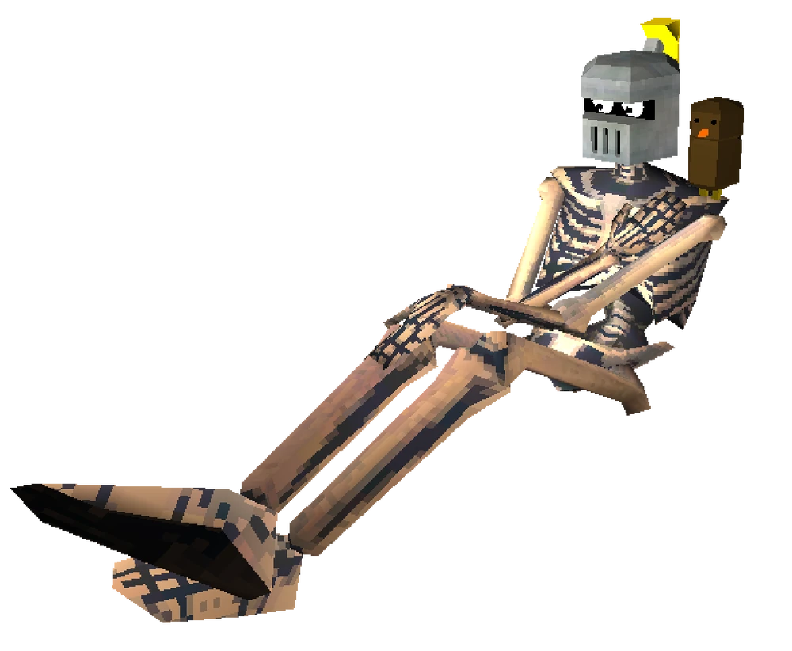

The Mysterious Druid Knight (& Owl) can be found by destroying one of the walls to the left after entering the T-shaped corridor with a wall that has a drawing of Gabriel with the word "TRAITOR" written over it in blood. After breaking the wall, destroy the lid of the coffin in the right corner of the room closest to the entrance and retrieve the skull, then place it on the blue pedestal in front of the larger coffin at the end of the room. To clear this level, you must either set the torch on the starting or final pedestals and return to the room, or never pick up the torch at all.
Upon killing the boss, a tablet can be found in their coffin that reads:
"Within the PYRAMID lies the chamber of THE FELINE and THE RODENT.
Within the CHAMBER lies a pool of clear WATER.
Within the WATER lies a SECRET...
But only those who wield the ELECTRIC magic of the Druids may find it."
The Mysterious Druid Knight (& Owl) has four health bars (purple, pink, maroon, and red), as well as four phases. In the second phase, they increase their movement and attack speed. In the third phase, they become Enraged, and in the final phase, they are covered in sand (or salt, as they like to call it) to prevent the player from healing.
Their movement follows a set loop: they fire one of their two attacks before dashing away or sideways. This makes sustained fire, like with the Nailgun, difficult, but it is easier to land short bursts of fire, such as with the Revolver or Shotgun.
The Whiplash is an extremely useful tool in this fight, as it can drag the Mysterious Druid Knight (& Owl) towards the player, allowing for multiple close, high-damage shots. The Railcannon is also effective, and Overcharging the Pump Charge Shotgun can deal substantial damage, though it's risky. Ricoshots are highly effective as well.
Using the Attractor Nailgun's Magnet can pin them down, preventing their movement and allowing for additional damage using weapons like the Railcoin or Shotgun swap.
If you're looking to cheese the fight, after the Mysterious Druid Knight (& Owl) begins their "Fuller Auto" attack, any explosion can deflect their projectiles back at them, often shredding multiple health bars at once and potentially instakilling them. The most effective way to do this is by shooting a Core Eject with the Malicious Railcannon immediately after they announce "Fuller Auto". The massive explosion will hit and deflect all projectiles, dealing fatal damage.
Alternatives for cheesing include parrying the "Fuller Auto" attack at point-blank range, which can result in an instakill, assuming enough projectiles are deflected. You can also use the Sharpshooter Revolver to shoot and deflect all homing projectiles back into them.
Even if the duo is covered in sand salt, you can still heal by parrying their "Fuller Auto" attack as a good alternative.